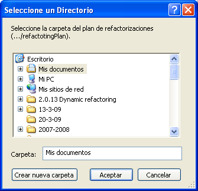
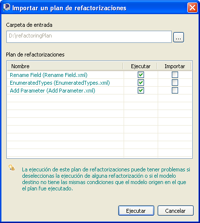
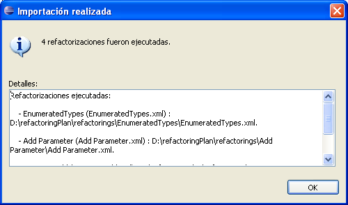
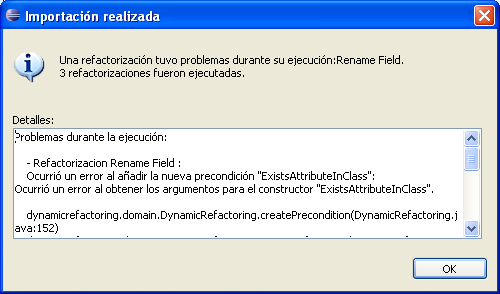

Importar un plan de RefactorizacionesImportar un plan de Refactorizaciones
Importar un plan de RefactorizacionesImportar un plan de RefactorizacionesEn esta secci�n se muestra c�mo ejecutar e importar un conjunto de refactorizaciones que conforman un plan de refactorizaciones din�micas.
Para importar un plan de refactorizaciones din�micas se debe ir al menú Dynamic Refactoring > Importar Plan De Refactorizaciones... para que se abra el di�logo que permite la importaci�n y ejecuci�n de un plan de refactorizaciones din�micas.
Con el bot�n "..." se podr� seleccionar el directorio donde est� localizado el plan de refactorizaciones en caso de ser diferente al establecido por defecto. El plugin efectuar� una b�squeda a lo largo del directorio del plan seleccionado buscando los ficheros que contengan la definici�n de cada una de las refactorizaciones del plan.

Seleccionar directorio de entrada
checkbox del di�logo.

Importar plan de refactorizaciones
Inicialmente se le muestra al usuario un mensaje indicando que la ejecuci�n del conjunto de refactorizaciones puede causar problemas si decide deseleccionar alguna de las mismas para ser ejecutada o si el proyecto destino no contiene elementos con las mismas caracter�sticas que sobre los que se ejecutaron originalmente cada una de las refactorizaciones.

Confirmaci�n
En caso contrario se muestra una pantalla que informa de las refactorizaciones que han dado problemas a la hora de ser ejecutadas y que por tanto no han podido ser llevadas a cabo. Adem�s se muestra la traza de las excepciones que han producido que la ejecuci�n de dichas refactorizaciones no haya podido realizarse. Tambi�n se muestra el conjunto de refactorizaciones importadas y el path en el que se encuentra la definici�n de las mismas.

Problemas durante la ejecuci�n